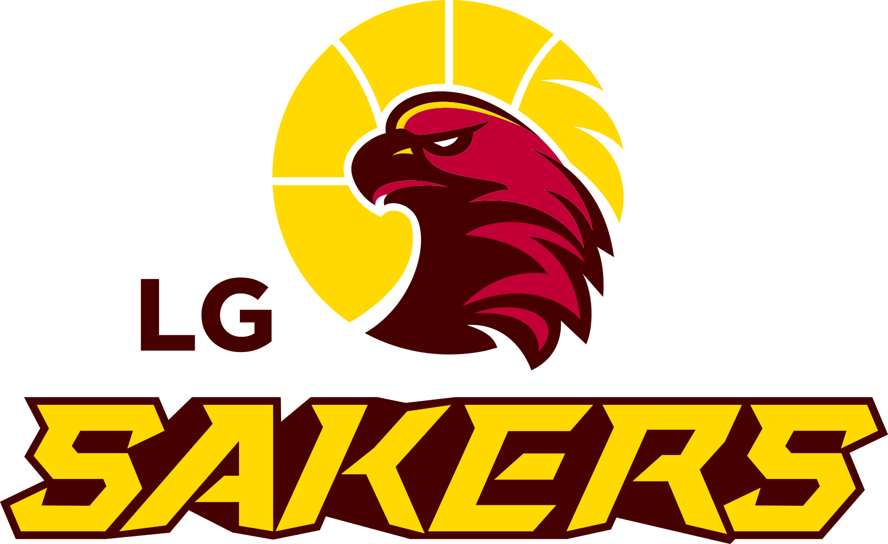
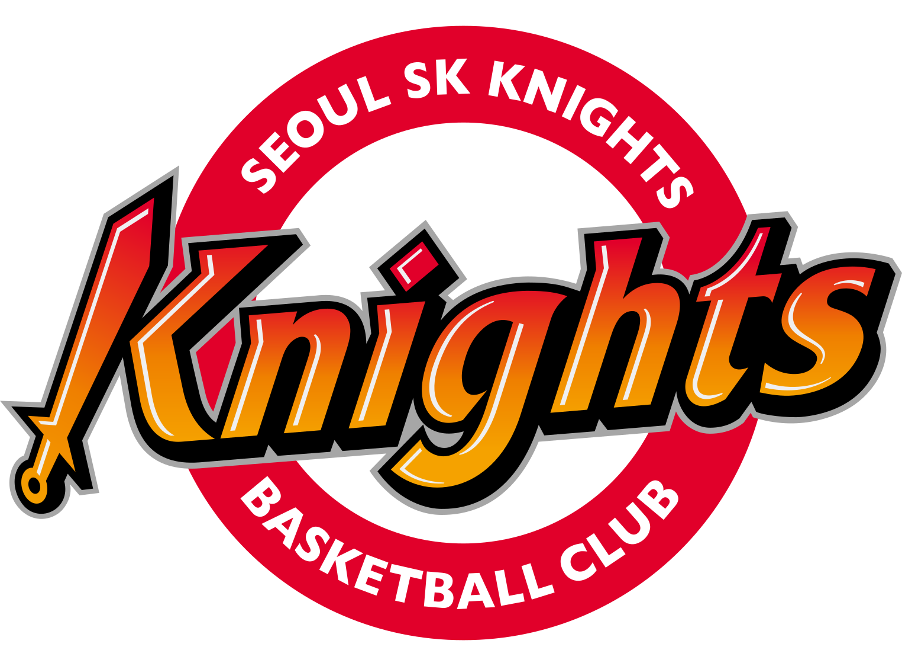
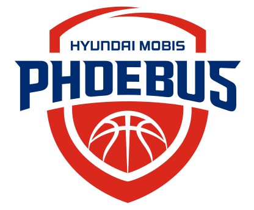
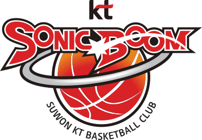
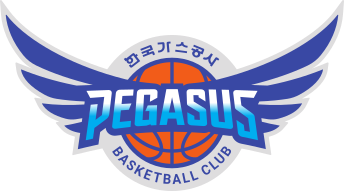
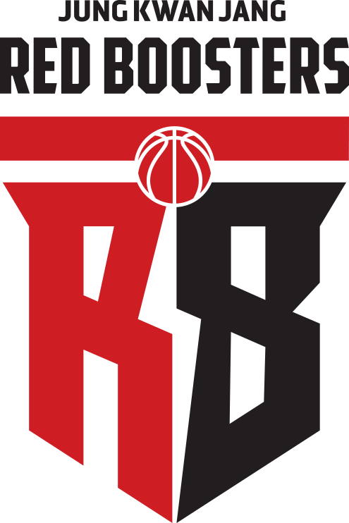
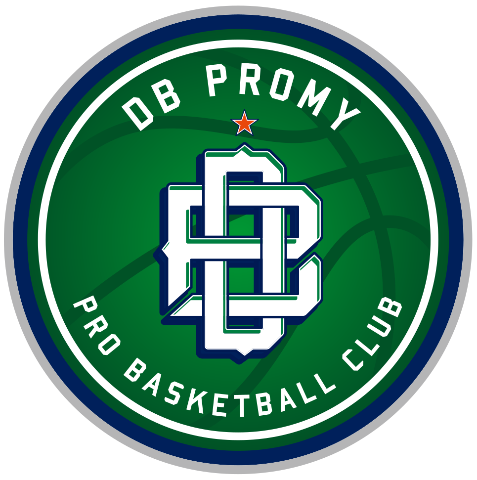
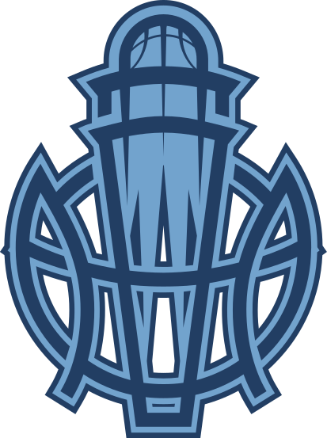
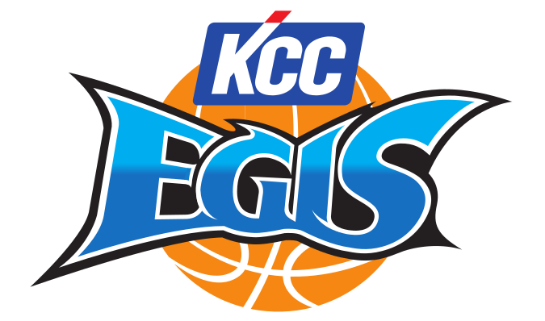
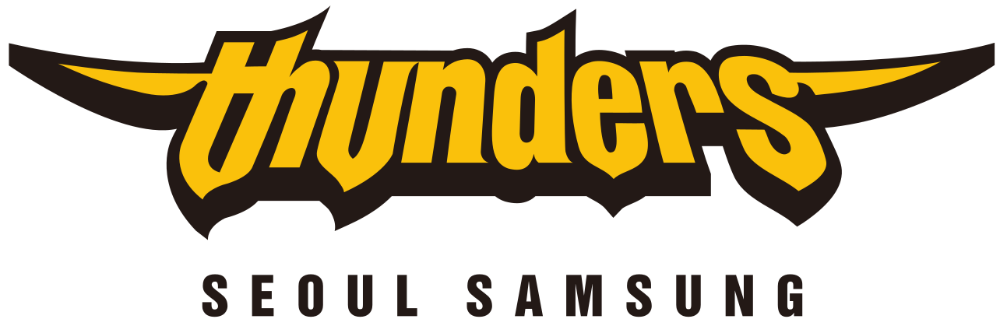
대한민국 KBL 소속의 프로농구단. 연고지는 효빈광역시이며, 구단주는 서브컬처계의 큰 손인 효빈애니메이션본부이다.
K리그의 '효빈 레인보우 아쿠아드'가 러브라이브 파라면, 이쪽은 전 세계 프로 스포츠 구단 중 유일하게 BanG Dream!(뱅드림!)의 밴드 IP를 구단 이름과 정체성으로 사용하는 '본격 밴드리 협업 구단'이다. 농구 코트에서 락 스피릿을 불태우는 열정적인 팀 컬러로 KBL의 흥행 카드로 군림하고 있다.
본래 효빈 지역의 중소 구단이었으나, 효빈애니메이션본부가 인수하며 파격적인 리브랜딩을 단행했다.
가장 놀라운 점은 구단 명칭인 'Afterglow'와 캐릭터 사용권에 대해 일본 부시로드의 키다니 다카아키 회장이 정식 사용을 허용해 주었다는 것. 물론 공짜는 아니다. 매년 엄청난 액수의 로열티를 부시로드에 상납(?)하고 있는데, 그럼에도 불구하고 구단 운영 수익과 굿즈 매출이 로열티를 아득히 상회하여 매년 엄청난 흑자를 기록 중이라는 건 안비밀(...). 덕분에 키다니 회장도 효빈 직관을 올 때마다 싱글벙글 웃으며 돌아간다는 후문이 있다.
인수 직후에는 "농구단이 장난이냐"라는 골수 농구팬들의 거센 비난도 있었으나, 막대한 자금력으로 국가대표급 스쿼드를 구축하며 창단 2년 만에 KBL 통합 우승을 달성, 실력으로 모든 논란을 잠재웠다.
현재는 K리그의 전북 현대나 과거 KBO의 삼성 라이온즈처럼 "돈으로 승리를 산다"는 타 팀 팬들의 시샘 섞인 원성을 받을 정도로 리그 내 절대 강자로 군림하고 있다.
Afterglow 밴드의 정체성을 구단 디자인에 그대로 가져왔다.
KBL 10개 구단 중 관객 동원력 압도적 1위.
구단 마스코트와 앰버서더가 무려 애프터 글로우 멤버 5명 전원이다. 경기장 곳곳에 멤버들의 홀로그램 등신대가 배치되어 있으며, 장내 아나운서가 득점 시 멤버들의 목소리로 콜을 외친다.
기존 농구 팬층인 '그로우즈'와 뱅드림 팬덤인 '뱅더'들이 한 체육관에서 기묘하게 공존한다.
상대 팀 선수의 자유투 방해 때 뱅드림 게임 내의 '폭사(라이브 실패)' 짤방을 대형 깃발로 흔들어 보여주거나, 슬램덩크 주제가 대신 밴드 오리지널 곡을 떼창하는 응원 문화가 특징. 특히 모카 팬들은 경기장에서 응원 도구 대신 빵을 먹으며 응원하는 것이 전통으로 자리 잡았다(...). 체육관 안에 항상 고소한 빵 냄새가 진동한다.